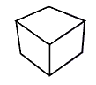
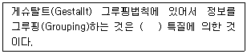
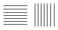
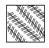
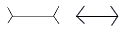
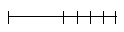
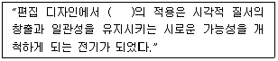

시각디자인산업기사 (2012-03-04 기출문제)
1과목: 색채학
1. 색채에 대한 연상과 상징을 찍지어 놓은 것 중 옳은 것은?
- 흑색(black) - 겸손, 우울, 중성색, 점잖음
- 주황(orange) - 원기, 적극, 희열, 풍부
- 청색(blue) - 창조, 우미, 신비, 고가, 예술
- 적색(red) - 애정, 코스모스, 창조적, 정서
(정답률: 75%)

2. 방위와 그 상징 색채의 연결이 옳은 것은?
- 동쪽 - 황색
- 서쪽 - 청색
- 남쪽 - 적색
- 북쪽 - 녹색
(정답률: 94%)
3. 먼셀 표색계의 특징에 관한 설명 중 틀린 것은?
- 명도 5를 중간 명도로 한다.
- 실제 색입체에서 N9.5는 흰색이다.
- B과 Y의 중간색은 0로 표시한다.
- 노랑의 순색은 5Y9/14이다.
(정답률: 90%)
4. 다음 중 계통색명으로 색을 표기한 것은?
- 가지색
- 해맑은 빨강
- 카민(Carmine)
- 5B 2.5/2
(정답률: 알수없음)
5. 색의 지각과 감정효과에 관한 설명으로 틀린 것은?
- 색의 온도감은 빨강, 주황, 노랑, 연두, 녹색, 파랑, 하양 순으로 파장이 긴 쪽이 따뜻하게 지각된다.
- 색의 온도감은 색의 삼속성 중 명도의 영향을 많이 받는다.
- 난색계열의 고채도는 심리적 흥분을 유도하나 한색계열의 저채도는 심리적으로 침정된다.
- 연두, 녹색, 보라 등은 때로는 차갑게 때로는 따뜻하게 느껴질 수도 있는 중성색이다.
(정답률: 74%)
6. 다음 색에 관한 설명 중 틀린 것은?
- 채도가 높으면 자극이 강하다.
- 색조는 명도와 채도를 합친 개념이다.
- 일반적 배색 원칙으로 색조가 강한 색은 좁은 면적에 엑센트 색으로 사용한다.
- 무채색의 속성에는 색상이 없고 명도와 채도만이 있다.
(정답률: 94%)
7. 우리나라에서 채택한 산업디자인의 색채 표시방법(KS규격)으로 가장 올바른 것은?
- 색명(영어명 또는 국어명)과 색채견본으로 표시하는 것이이상적이다.
- 오스트발트 표색기호와 지정된 일반색명 및 색채견본을 함께 사용하는 것이 이상적이다.
- 먼셀 표색기호와 지정된 일반색명 및 색채 견본을 함께 사용하는 것이 이상적이다.
- 누구나 알기 쉬운 국어 관용색명과 세계 공통의 표색기호만 사용하는 것이 이상적이다.
(정답률: 100%)
8. 문, 스펜서의 색채조화이론에 대한 설명 중 틀린 것은?
- 먼셀 표색계로 설명이 가능하다.
- 정량적으로 표현 가능하다.
- 오메가 공간으로 설정되어 있다.
- 색채의 면적관계를 고려하지 않았다.
(정답률: 73%)
9. 오스트발트의 등색상 삼각형에서 흰색(W)에서 순색(C) 방향과 평행한 색상의 계열은?
- 등순색계열
- 등흑색계열
- 등백색계열
- 등가색계열
(정답률: 25%)
10. 먼셀 색채 조화의원리에 대한 내용으로 거리가 먼 것은?
- 동일색상 조화 시 명도 및 채도에 관하여 정연한 간격으로 했을 때 조화된다.
- 명도는 같으나 채도가 다른 반대색끼리는 약한 채도에 넓이를 주고 강한 채도에 작은 면적을 주면 조화된다.
- 채도가 같고 명도가 다른 반대색끼리는 회색척도에 관하여 정연한 간격으로 했을 때 조화된다.
- 회색은 회색척도의 5개 단계에 관하여 정연하고 고른 간격으로 했을 때 잘 조화된다.
(정답률: 27%)
11. 다음 중 감산혼합을 설명한 것은?
- 2개 이상의 색을 혼합할 때 혼합하는 색의 수가 많을수록 혼합 결과 색의 명도는 낮아진다.
- 2개 이상의 색을 혼합할 때 혼합하는 색의 수가 많을수록 혼합 결과 색의 명도가 높아진다.
- 2개 이상의 색을 혼합할 때 혼합하는 색의 수에 관계없는 혼합 결과 색의 명도는 혼합하는 색의 평균 명도가 된다.
- 2개 이상의 색의 선이나 점이 서로 인접한 색으로 인하여 중간 색상으로 보이는 경우를 말한다.
(정답률: 80%)
12. 디지털 컬러 디스플레이 매체 CRT와 LCD방식에 대한 설명 중 틀린 것은?
- CRT 방식은 전자빔이 RGB 형광 소자에 충돌하여 색을 만들어 낸다.
- LCD 방식은 CRT 방식에 비해 색재현도가 높다.
- LCD 방식은 RGB 필터를 사용하여 색을 만들어 낸다.
- CRT와 LCD의 색역은 차이가 있다.
(정답률: 50%)
13. 색 지각을 일으키는 환경적인 요건은?
- 안구
- 빛
- 대뇌
- 물체
(정답률: 알수없음)
14. 다음 중 병원 입원실처럼 안정을 요하는 공간에 가장 적절한 색채는?
- 노랑색 계열의 고명도, 고채도의 색
- 주황색 계열의 저명도, 고채도의 색
- 보라색 계열의 중명도, 고채도의 색
- 파랑색 계열의 고명도, 저채도의 색
(정답률: 92%)
15. 색팽이에 2가지 색을 칠하여 빨리 회전시켰을 때 나타나는 현상과 관계없는 것은?
- 회전혼합
- 감산혼합
- 중간혼합
- 계시혼합
(정답률: 60%)
16. 눈의 감광 요인 중 무채색을 지각할 수 있으며, 적색, 황색, 녹색, 청색 등의 유채색 지각이 불가능한 것은?
- 추상체
- 간상체
- 수정체
- 글라스체
(정답률: 87%)
17. 디지털 색채시스템에서 RGB형식으로 검정을 표현하기에 적절한 수치는?
- R=255, G=255, B=255
- R=0, B=0, B=255
- R=0, G=0, B=0
- R=255, G=255, B=0
(정답률: 67%)
18. 만일 스펙트럼을 Red, Orange, Yellow와 Green, Blue, Violet의 두 개의 무리로 분해하여 이 두 무리를 각각 모아 렌즈로 집합시키면 두 개의 혼합광이 된다. 다시 이 두 혼합광을 서로 혼합시킬 때 그 결과에 가까운 것은?
- 백광
- 흑광
- 청광
- 자광
(정답률: 75%)
19. 색채조화론에서 "조화는 질서와 같다."는 이론과 관계있는 사람은?
- 오스트발트(Ostwald)
- 베졸드(Bezold)
- 버크호프(G.D.Birkhoff)
- 럼포드(Rumford)
(정답률: 95%)
20. 태양이 뜨거나 질 때 노을이 나타나는 것은 빛의 어떤 성질 때문인가?
- 굴절
- 산란
- 회절
- 반사
(정답률: 100%)
2과목: 인쇄 및 사진기법
21. 제판법의 중류 중 인쇄판의 사용 목적에 따른 기본 4판식이 아닌 것은?
- 볼록판
- 평판
- 공판
- 잉크제트판
(정답률: 86%)
22. 컬러사진(negative)의 인화 결과, 피부 톤에 Green의 컬러 캐스터(cast)를 일으켰을 때 해결방안으로 가장 바람직한 필터 조절 방법은?
- Magenta 수치를 더한다.
- Cyan 수치를 더한다.
- Magenta 수치를 줄인다.
- Yellow 수치를 더한다.
(정답률: 75%)
23. 자외선을 방지할 목적으로 사용하는 컬러사진용 필터는?
- PL 필터
- Sky Light 필터
- YG 필터
- Blue 필터
(정답률: 31%)
24. 일반 촬영용 네거티브 필름의 가장 적당한 콘트라스트 인덱스(Contrast Index)는?
- 0.1 ~ 0.3
- 0.2 ~ 0.4
- 0.5 ~ 0.6
- 0.6 ~ 0.7
(정답률: 65%)
25. 촬영거리가 4m인 피사체를 가이드넘버가 32인 플래시로 촬영할 때 카메라의 적정 조리개 수치는?
- F4
- F8
- F16
- F32
(정답률: 88%)
26. 사진을 서로 이어 붙이거나 다중인화 또는 다중 노출시켜 새로운 시각 효과를 구성하기 위해 제작된 작품 또는 기법은?
- 소프트 포커싱(soft focusing)
- 릴리프 포토(relief photo)
- 포토 몽타주(photo montage)
- 디포메이션(deformation)
(정답률: 77%)
27. 면분할식과 같은 평면적인 톤을 가지는 상을 만드는 인화 기법으로 정상적인 피사체 톤을 하이콘트라스트 필름을 사용하여 3~4가지의 특정 톤으로 분리한 후 한 장의 인화지에 각각 노출하여 상을 만드는 기법은?
- 선 인화
- 포스터리제이션
- 디옵터
- 표준 인화
(정답률: 69%)
28. 인쇄물 표면 코팅의 종류가 아닌 것은?
- 니스 코팅
- 비닐 코팅
- 왁스 코팅
- 아교 및 형광 코팅
(정답률: 75%)
29. 컴퓨터의 데이터를 광학적으로 읽어내는 인쇄물에 사용하는 잉크는?
- 액정 잉크
- 형광 잉크
- 감감 잉크
- OCR 잉크
(정답률: 91%)
30. 인쇄얼룩(mottle) 현상에 대한 설명으로 틀린 것은?
- 축임물로 인한 얼룩발생은 없다.
- 농도가 낮은 잉크 사용시 발생한다.
- Cyan이나 군청인쇄에 많이 발생한다.
- 코팅 층이 불균일한 종이에서 발생한다.
(정답률: 75%)
31. 초점거리가 85mm인 렌즈의 유효구경이 60.7mm일 때 렌즈의 밝기는?
- 0.71
- 1.4
- 2.8
- 3.5
(정답률: 50%)
32. 광원에 대한 설명으로 틀린 것은?
- 정면광은 평면적이고입체감이 강하므로 다른 광과 함께 사용할 필요가 없다.
- 산광은 광원으로부터 나온 빛이 그 빛을 확산시켜 주는 물체를 통화했을 때 생기므로 콘트라스트가 약하고 부드러워 정감있는 사진을 만들어 준다.
- 역광은 극적인 효과나 물체의 윤곽묘사 등 로맨틱한 분위기 조성에 좋다.
- 측면광은 피사체의 입체감을 잘 살려준다.
(정답률: 55%)
33. 물과 기름의 반발작용을 이용하여 인쇄하는 방식은?
- 볼록판 인쇄
- 평판 인쇄
- 오목판 인쇄
- 공판 인쇄
(정답률: 알수없음)
34. 문자의 크기 중 1포인트(point)는 약 몇 mm 인가?
- 0.254
- 0.3514
- 2.54
- 3.514
(정답률: 74%)
35. 다음 중 원색인쇄 제판용 컬러 원고의 크기로 가장 좋은 필름은?
- 35mm 필름
- 70mm 필름
- 120mm 필름
- 4"× 5" 필름
(정답률: 39%)
36. 하이키(high-key) 사진에 대한 설명으로 틀린 것은?
- 무겁고 어두운 부분이나 음영이 없는 사진을 말한다.
- 광고사진 분야의 조명으로서 행복감이나 분위기를 나타내는데 적합하다.
- 어린이나 젊은 여성의 피부를 표현하는데 적합하다.
- 하이키 사진은 음영을 강하게 함으로써 얻어진다.
(정답률: 60%)
37. 초점면이나 필름면 바로 앞에 설치되어 있으며 선막과 후막이라고 하는 2매의 천이나 금속막으로 이루어진 셔터는?
- 렌즈 셔터
- 돈톤 셔터
- 포컬 플레인 셔터
- 라이트 밸류 셔터
(정답률: 65%)
38. 컬러 네거티브 필름 현상처리 순서가 바르게 된 것은?
- 발색현상 - 수세 - 건조 - 표백 - 정착
- 표백 - 발색현상 - 정착 - 수세 - 건조
- 발색현상 - 표백 - 정착 - 수세 - 건조
- 발색현상 - 정착 - 수세 -표백 - 건조
(정답률: 84%)
39. 인쇄용지를 비도포지, 도포지, 판지를 나눌 때 도포지에 해당되는 것은?
- 아트지
- 중질지
- 갱지
- 모조지
(정답률: 알수없음)
40. 색온도가 가장 높은 광원은?
- 요오드 램프
- 스트로보
- 100W
- 선명하고 푸른 하늘 빛
(정답률: 77%)
3과목: 시각디자인론
41. 질과 양이 다른 2가지가 대립하는 효과를 일컫는 디자인 원리는?
- symmetry
- gradation
- accent
- contrast
(정답률: 50%)
42. 다음은 어떤 도법으로 그린 것인가?

- 3점 투시투상
- 정투상
- 표고투상
- 2등각 투상
(정답률: 54%)
43. 바우하우스를 다음과 같이 4기로 나누었을 때, 산업과 가장 밀접했던 시기는?
- 바이마르(Weimar) 시대
- 데사우(Dessau) 시대
- 한네스 마이어(Hanes Meyer) 시대
- 미스 반 데 로에(Mies van der Rohe) 시대
(정답률: 67%)
44. 바탕(ground)과 도형(figure)에서 도형이 되기 쉬운 조건이 아닌 것은?
- 상하로 구분된 영역에서 상 부분
- 시야의 중앙을 차지하는 영역
- 대칭형을 이루는 부분
- 에워싸여진 영역
(정답률: 37%)
45. 황금분할(Golden Section)에 의한 비례는?
- 1 : 0.618
- 1 : 1.618
- 1 : 2.618
- 1 : 3.618
(정답률: 90%)
46. 바람직한 경영환경을 창조하기 위해, 기업의 새로운 이미지와 커뮤니케이션을 의도적, 계획적으로 만들어내는 경영전략은?
- 포장 디자인
- 광고 디자인
- C.I.P 디자인
- DM 디자인
(정답률: 67%)
47. 다음 중 근대디자인에 직접적 영향을 준 사조가 아닌 것은?
- 다다이즘
- 초현실주의
- 고전주의
- 미니멀아트
(정답률: 57%)
48. 복고주의적 장식에서 탈피, 혁신적인 "새로움"을 추구하여 생활에 실용화 하려한 19세기말 유럽 각국의 운동으로 틀린 것은?
- 독일 - 유겐트 스틸(Jugendstil)
- 이탈리아 - 스틸레 리베르타(Stile Liberta)
- 벨기에 - 퓨츄어리즘(Futurism)
- 오스트리아 - 시세션(Secession)
(정답률: 77%)
49. 정적인 형태의 선은?
- 점이 이동한 것
- 선이 이동한 것
- 입체의 한계나 교차
- 면의 한계나 교차
(정답률: 39%)
50. 다음 ( )안에 알맞은 것은?

- 이해적
- 구성적
- 시각적
- 이상적
(정답률: 50%)
51. 정투상 도법과 관련이 없는 것은?
- 1각법
- 평면도
- 3각법
- 1소점법
(정답률: 알수없음)
52. 디자인 원리가 아닌 것은?
- 조화
- 균형
- 시간
- 율동
(정답률: 94%)
53. 다음 광고 수용과정 중 실제적인 구매가 이루어지는 과정은?
- 접촉과정
- 행동과정
- 인지과정
- 태도과정
(정답률: 72%)
54. 다음 중 제도에서 좌표에 대한 설명으로 적절한 것은?
- 2차원, 3차원의 공간에서 점이나 선, 면의 위치를 표시하는 정확한 자리 값의 점들을 말한다.
- 정지된 한 시점에서 물체를 바라보는 제한된 범위의 각도이다.
- 물체를 수직 투상법으로 나타낸 도형이다.
- 두 개의 평행선이 거리가 떨어진 어느 한 지점에서 만나는 것처럼 보이는 현상이다.
(정답률: 알수없음)
55. 일본 현대 디자인 발전에 큰 자극제가 되었던 1940년대 미국의 레이먼드 로위(R.Loewy)가 디자인 한 것은?
- 마쓰시다 전기 라디오
- 럭키 스트라이크(Lucky Strike) 담배갑
- 아사히 신문 기업광고
- 마이니치 공업 공예품
(정답률: 84%)
56. 굿 디자인의 조건과 가장 관계가 먼 것은?
- 심미성
- 경제성
- 독창성
- 신축성
(정답률: 94%)
57. 19세기말 사회적 모순, 새로운 양식의 등장, 과학 기술의 진전과 함께 소위 모던디자인이 탄생되었다. 특히 미술공예운동 등이 모던디자인의 발달에 절대적 영향을 초래하기도 했는데 다음 중 그 당시의 상황을 설명하는 모던(Modern)의 중요한 의미가 아닌 것은?
- 신분제도의 붕괴
- 토착적 가치관의 성립
- 종교적 귄위의 실추
- 도시로의 인구집중
(정답률: 42%)
58. 미술공예운동의 중심인물로 영국에서 건축과 공예를 중심으로 전개했던 사람은?
- 발터 그로피우스
- 헤르만 무테지우스
- 루이스 설리반
- 윌리엄 모리스
(정답률: 알수없음)
59. 제1회 만국 박람회(1851년)의 설명 중 옳은 것은?
- 박람회장인 크리스탈 패리스(수정궁)는 헨리 콜(Henry Cole)이 설계하였다.
- 전시된 기계제품보다 수공예품의 우수성을 돋보이게 하였다.
- 프랑스 공업미학운동의 원동력이 되었다.
- 박람회의 영향으로 바우하우스가 설립되었다.
(정답률: 17%)
60. 디자인 영역 분류 중의 대표적인 4차원영역은?
- 영상 디자인
- P.O.P 디자인
- 어패럴 디자인(Apparal Design)
- 사인 디자인(Sign Design)
(정답률: 70%)
4과목: 시각디자인실무 이론
61. 어떤 유형의 커뮤니케이션을 집행한 후 수용자에게서 얻는 반응 중 커뮤니케이션 효과이면서 마케팅 효과인 것은?
- 주의효과(주목률)
- 인지효과(인지율)
- 태도변화(호감도)
- 구매효과(판매율)
(정답률: 39%)
62. TV 광고 중 프로그램과 프로그램사이에 삽입되는 광고는?
- 블록 광고
- 프로그램 광고
- 스파트 광고
- 네트윅 광고
(정답률: 50%)
63. 다음 중 메커니컬 일러스트레이션(mechanical illustration)에 해당되는 것은?
- 경기장의 조감도
- 실내 배치도
- 등반로 안내도
- 승용차 내부 단면도
(정답률: 67%)
64. 시장조사기법에 있어서 포커스 그룹 인터뷰(FGI)에 대한 설명으로 틀린 것은?
- 참석자는 5~8명 정도가 적당하다.
- 참석자의 반응(발언,표정,태도)을 직접 관찰할 수 있다.
- 최종 통계를 통해 결과가 명확해진다.
- 단시간에 손쉽게 할 수 있다.
(정답률: 42%)
65. 다음 중 TV 기업 광고에 관한 내용으로 거리가 먼 것은?
- 전달하려는 메시지를 직접적으로 표현함으로써 상품이나 서비스에 대한 선호도를 높이려한다.
- 기 업광고는 특정 기업이나 공공 기관의 이미지 제고에 주로 활용 된다.
- 기업의 경영 이념이나 상품의 공익성을 나타내주는 짤막한 다큐멘터리나 시리즈물로 구성된다.
- 환경개선이나 문화 활동을 적극 지원하는 공익성 기업임을 부각시키는 것이 전형적 예라고 할 수 있다.
(정답률: 19%)
66. 다음 중 패키지의 기능으로 거리가 먼 것은?
- 보호와 보존성
- 상품성
- 편리성
- 신속성
(정답률: 74%)
67. 캘린더 디자인의 조형 요소에 관한 설명으로 틀린 것은?
- 한정된 공간 속에서 각각의 구성요소들을 효과적으로 배치해야 한다.
- 색의 감정이나 연상 작용 등을 고려해야 한다.
- 숫자는 가독성이 높은 세리프체를 사용해야 한다.
- 기능적인 측명과 미적인 측면이 합치되는 레이아웃이 행해져야 한다.
(정답률: 54%)
68. 소비자의 마음속에 있는 브랜드의 위치가 바꾸기 위한 포지셔닝 전략으로 옳은 것은?
- 축소 지향적 가치기준을 설정한다.
- 가치 기준 사이의 중요도를 계속 유지한다.
- 자사 브랜드의 차별적 우위점을 부각한다.
- 타 브랜드의 평가를 높여준다.
(정답률: 75%)
69. 다음 중 기업을 가장 포괄적, 상징적으로 표현하며, 직감적, 감각적 커뮤니케이션 기능을 중시하여 제작되는 C.I의 기본 요소는?
- 심벌 마크(Symbol Mark)
- 네이밍(Naming)
- 타입페이스(Typeface)
- 픽토그램(Pictogram)
(정답률: 87%)
70. 브레인스토밍(brainstorming)의 발상기법에 대한 설명으로 옳은 것은?
- 머리 속에 저장된 아이디어를 혼자 발전시켜 표현하는 기법
- 각 사람들의 아이디어를 상급자에게 보고하는 기법
- 조직 내 상급자의 아이디어를 발전시켜 표현하는 기법
- 그룹을 짜서 각각 구속받지 않고 아이디어를 내는 기법
(정답률: 77%)
71. 다음 착시 현상의 그림 중 뮬러 라이어의 착시도형에 해당되는 것은?




(정답률: 87%)
72. 옥외광고물 중 도로연변과 이로부터 전망되는 지역에 설치하는 것은?
- 횡간판
- 아립간판
- 점두사인
- 아치
(정답률: 45%)
73. 다음 광고매체 중 소구대상이 가장 명확한 것은?
- 텔레비젼
- 라디오
- 신문
- DM
(정답률: 54%)
74. 심벌마크 디자인의 조건으로 거리가 먼 것은?
- 식별성과 차별성
- 주체의 성격과 개성을 충분히 반영
- 긴 생명력을 지속시킬 수 있는 조형력
- 국제적 행사에 사용되는 일종의 공통언어로서의 기능
(정답률: 59%)
75. 다음 중 타이포그래피에 대한 설명으로 틀린 것은?
- TV 타이포그래피는 가능한 중간 굵기나 굵은 체가 좋다.
- 옥외(屋外) 타이포그래피는 문자 판독성이 중요하기 때문에 정교한 문자체는 피하는 것이 좋다.
- 전면적인 대문자(영어일 경우) 사용은 독서 속도를 높인다.
- 타이포그래피는 목적에 합당하고 만들기 쉽고, 아름다워야 한다.
(정답률: 75%)
76. 다음 중 일반적인 B.I의 개발단계를 옳게 나타낸 것은?
- 디자인 컨셉 개발 - 자료분석 - 응용시스템 개발 - 도입
- 자료 분석 - 응용시스템 개발 - 디자인 컨셉 개발 - 도입
- 응용시스템 개발 - 디자인 컨셉 개발 - 자료분석 - 도입
- 자료분석 - 디자인 컨셉 개발 - 응용시스템 개발 - 도입
(정답률: 67%)
77. 제품 수명주기로서 급속한 시장수용단계이며 이익이 향상되고 경쟁이 증가하는 시기는?
- 도입기
- 성장기
- 성숙기
- 쇠퇴기
(정답률: 81%)
78. "Good Design is Good Business" 의 의미가 가장 가까운 것은?
- 디자인 아키텍쳐의 중요성
- 디자인 매니지먼트의 중요성
- 디자인 컨설턴트의 중요성
- 디자이 크리에이티브의 중요성
(정답률: 75%)
79. 다음 중 P.O.P 광고에 적합하지 않는 것은?
- 행어(hanger)
- 쇼윈도우 광고
- 패키지
- 슈퍼그래픽
(정답률: 74%)
80. ( )안에 가장 적합한 단어는?

- 그리드
- 페이지
- 문자
- 일러스트레이션
(정답률: 100%)